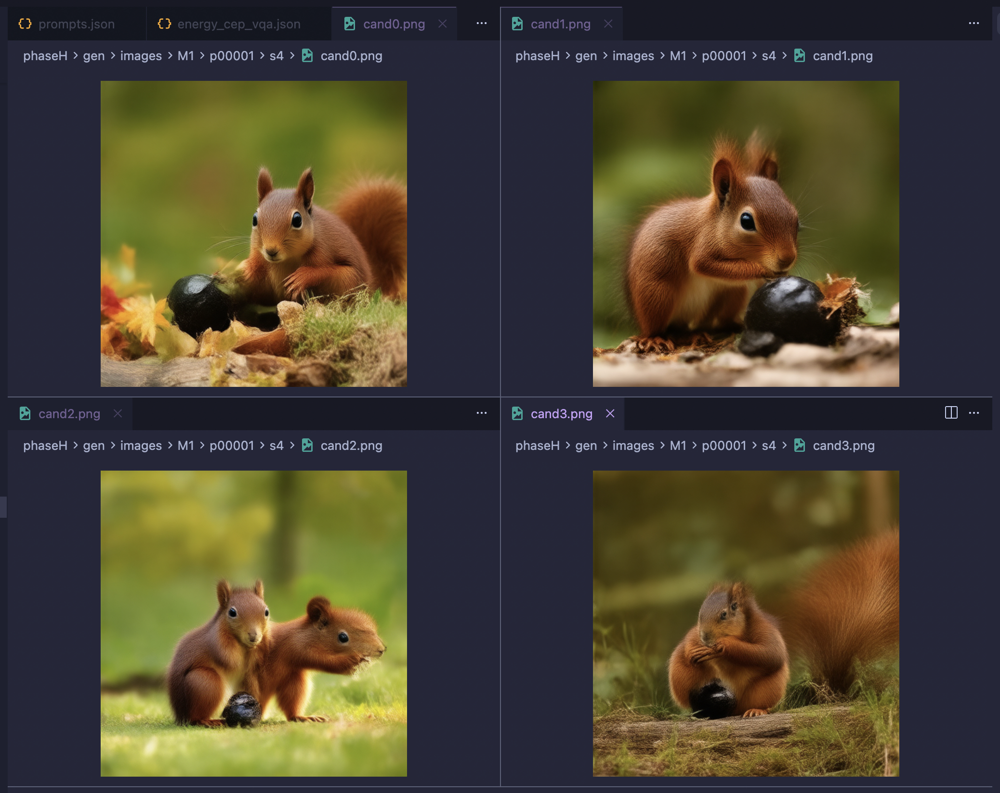

Supervisor briefing · audited evidence · \(8\) August \(2026\)
Can best-of-\(K\) selection be amortized into a four-step generator?
Stable Diffusion \(3.5\)-Medium, distilled to four steps. What we asked, what the experiments actually establish, and the decisive experiment — which has now landed and passed its preregistered gate.
Act \(2\) selection did not transfer
\(\Rightarrow\)
Act \(3\) a comparative loss did
\(\Rightarrow\)
Act \(5\) the label sign is causal, and prompt-specific
Every number in this deck is recomputed from raw artifacts in reports/registry/registry.md, reports/audit_2026-08-07/ and reports/phaseFP_results/. Prose in older reports is not evidence.
How to read this deck
Act
One sentence
\(0\) The question
Different sampling trajectories give semantically different images; best-of-\(K\) exploits that, at \(K\times\) inference cost.
\(1\) Channels
Reward can enter through the noise, the trajectory, the target, or the loss. These are not equivalent. This is the spine.
\(2\) The negative
Distilling the selected trajectory transfers essentially nothing.
\(3\) The positive
An explicit pairwise loss moves fresh samples against a matched placebo.
\(4\) Circularity
Is the signal prompt-specific, or a generic image-quality prior? Evaluator-family evidence says mostly prompt-specific.
\(5\) The decider
Same two images, only the label sign changes. It landed: the preregistered gate passed, on two benchmarks.
\(6\) Mechanism
The loss mostly degrades the loser. The shared-noise story is refuted by its own preregistered falsification.
\(7\) Costs
Alignment and diversity trade off monotonically in one knob. One preregistered gate passed, one failed.
\(8\) Positioning
The loss is prior art. What we do and do not claim.
\(9\) Status
Phase FP is complete. Seed replication is running.
Takeaway. Acts \(2\) and \(3\) are the finished science. Act \(5\) is the payoff and it decided the paper in our favour. Everything technical is in the appendix after the final act. Every training result in this deck is 1 seed.
Act \(0\)
The question
One prompt, several teacher trajectories, several different pictures. Picking the good one works — but it costs \(K\) generations every time you sample.
The same prompt gives semantically different images

Prompt: “a brown squirrel and a black nut.” Four trajectories, four different counts, identities and spatial relations.
VQAScores \((0.649,\ 0.770,\ 0.815,\ 0.965)\).
Takeaway. The variation across trajectories is compositional, not cosmetic — so there is something real to select on.
Selecting the best of four really does help — but there are three different “selection” numbers
Intervention
Evaluator independent of the selector?
\(\Delta\)
\(95\%\) CI
score four cached teacher endpoints; top-of-four minus candidate mean — no generation, no training
no — selector is the evaluator, and it is in-objective
\(+0.1220\)
\([+0.1189,+0.1251]\)
teacher best-of-four at inference on held-out prompts, against a random candidate
yes — official CompBench
\(+0.0717\)
\([+0.0573,+0.0865]\)
best of four initial noise seeds for a fixed four-step \(M1\) student
yes — official CompBench
\(+0.0485\)
\([+0.0386,+0.0585]\)
Takeaway. These are three different interventions and must never be merged or averaged. Only \(+0.0717\) is “the teacher oracle”; it is the only legitimate amortization denominator of the three.
frozen teacher \(K=4\) generations \(\times\) \(8\) steps then pick the best
\(\longrightarrow\)
\(+0.0717\) held-out CompBench
\(\Longrightarrow\)
can we amortize this? one deterministic student \(4\) steps, \(1\) generation
The teacher pays \(K\times8=32\) network evaluations plus a VQA scorer, at every inference. The student would pay \(4\), with no scorer and no selection.
Takeaway. The project is not “make a better generator”. It is: how much of a per-prompt selection advantage can be moved into the weights — and through which channel.
Act \(1\)
Reward can enter through four channels, and they are not equivalent
This is the organising idea of the whole project. Everything after this slide is a controlled measurement of one channel.
Where the reward can be injected
Takeaway. Same reward, same teacher, same student, four injection points — and only one of them changed what the student generates. That contrast is the result.
Three training signals, three different things constrained
Consistency \((M1)\)
Match a frozen-teacher target propagated from a noisier state. Compresses \(28\) sampling steps into \(4\).
Constrains: the denoising map.
Scores no candidate. All \(20\) trajectory–timestep pairs get equal weight.
REPA
Align a hidden MMDiT representation with frozen DINOv2 patch features of a real image.
Constrains: an internal representation.
Never compares teacher trajectories.
Pairwise preference
Compare the student's reconstruction error on a preferred versus a rejected teacher endpoint, relative to frozen \(M1\).
Constrains: which outcome wins.
This is channel \(4\).
Takeaway. These are not interchangeable losses, and the deck keeps them separate throughout. Full equations for all three are in the appendix.
Channel scoreboard — where each act lands
Channel
What we changed
Headline
Verdict
\(1\) initial noise
best of four initial latents for a frozen student
\(+0.0485\;[+0.0386,+0.0585]\)
real oracle headroom, but shallow prediction of reward from raw noise is \(r=-0.0123\) — not cheaply harvestable
\(2\) trajectory
distil the best-of-four teacher trajectory
\(+0.00045\;[-0.00889,+0.00975]\)
null against a calibrated control
\(3\) target
reweight / replace the regression target (Phase G)
—
real measurements, but every proposed mechanism was broken by later controls
\(4\) loss
explicit pairwise comparative term
\(+0.04587\;[+0.03700,+0.05519]\)
moves fresh samples versus a matched placebo
Takeaway. Two orders of magnitude separate channel \(2\) from channel \(4\) under the same reward and the same teacher. All training results here are 1 seed.
Act \(2\)
The negative result
Selecting better teacher trajectories does not transfer through ordinary consistency regression.
VQAScore picks the winner large candidate-level gap
\(\longrightarrow\)
distil only that trajectory same \(M1\) recipe
\(\longrightarrow\)
fresh \(4\)-step samples independent evaluators
\(+0.00045\)
selected minus random trajectory official CompBench
\([-0.00889,+0.00975]\)
\(+0.00068\)
calibrated control replicate same recipe, different seed
\([-0.00867,+0.00990]\)
\(+0.0142\)
in-objective VQAScore the selector's own metric
\([+0.0075,+0.0207]\)
\(+0.0065\)
GenEval2 Soft-TIFA
\([-0.0109,+0.0239]\)
Takeaway. The intervention moved the selector's own metric and nothing else. The treatment effect is indistinguishable from a seed replicate on \(2{,}098\) held-out primary-category prompts.
How much of the oracle survived? Now with a real interval
Quantity
Contrast
prompts
\(\Delta\)
\(95\%\) CI
numerator
selected minus random trajectory, student @ \(4\) steps
\(2{,}098\)
\(+0.00045\)
\([-0.00889,+0.00975]\)
denominator
teacher best-of-four minus random, @ \(8\) steps
\(1{,}050\)
\(+0.07172\)
\([+0.05709,+0.08655]\)
\(0.0062\)
amortization ratio, point estimate
\([-0.126,+0.139]\)
\(95\%\) interval on the ratio
\(11.7\%\)
one-sided \(95\%\) upper bound cite this number
Takeaway. At most about a ninth of the teacher oracle could have survived this channel, and the point estimate is essentially zero. The old shortcut \(0.0097/0.0717\approx13.5\%\) divided an interval endpoint by a point estimate and is retired.
Why there is no joint bootstrap — and a standing trap
transfer contrast phaseC/eval_scores
\(\cap\)
teacher-oracle contrast exp0/primary_headroom
\(=\)
\(0\) shared prompts
The trap
The integer field idx is assigned per evaluation job. In one job colour \(\text{idx}=0\) is “a white piano and a black bench”; in another it is “a blue backpack and a green bottle”.
Anything joined on idx silently compares different prompts.
The rule
Every audit script joins on prompt text. Two Phase-I jobs were then verified to share \(2{,}398/2{,}398\) prompts with an identical \(\text{idx}\rightarrow\)prompt map, so their cross-job contrasts are valid.
Disjointness makes the two estimates independent — which is why an independent-bootstrap ratio is legitimate.
Takeaway. The \(11.7\%\) bound handles sampling error correctly but the numerator and denominator still describe different prompt populations. Closing that needs the teacher oracle re-estimated on the same split — not a different statistic.
What Act \(2\) is not
Not claimed
“Best-of-\(K\) selection cannot be amortized.”
“A deterministic generator cannot represent a reward-tilted distribution.”
“BOND proves forward-KL training cannot reproduce best-of-\(N\).”
“Reweighting teacher-consistent trajectories leaves the optimum invariant.”
Claimed
Under this consistency objective, on this backbone, with this selector, input-channel selection produced no measurable independent transfer, with a one-sided \(95\%\) upper bound of \(11.7\%\) of the teacher oracle.
It is a quantitative empirical limitation with an interval attached, and it is falsifiable by a better objective.
Takeaway. This is a strong measured limitation, not a theorem. Three earlier theoretical explanations for it have been retracted; see Act \(8\).
Act \(3\)
The positive result
Put the same reward into the loss instead of the input, and the fresh-sample distribution moves.
Phase I — the design, and what the placebo controls for
update the \(4\)-step student with an \(M1\) anchor
Preference arm
VQAScore orients the pair: the higher-scoring teacher endpoint is preferred.
Placebo arm
The same two images and the same score margins — only the preferred sign is deterministically randomized.
Takeaway. Both arms start from the same \(M1\), see the same candidates, data order, shared pair noise, optimizer and \(3{,}000\) updates. The only difference is the label sign — so the contrast controls for extra training entirely.
Phase I result — the comparative loss moves fresh samples 1 seed
\(+0.04587\)
preference minus placebo official T2I-CompBench primary
\([+0.03700,+0.05519]\)
\(+0.04958\)
preference minus placebo GenEval2 Soft-TIFA (independent judge)
\([+0.02910,+0.06943]\)
Compare with the trajectory channel on the same benchmark: \(+0.00045\;[-0.00889,+0.00975]\).
Takeaway. Two independent benchmarks agree in direction and both intervals exclude zero. This is the finding the paper is built on.
Training jobs \(99952\)–\(99954\), evaluation job \(99955\). Paired prompt bootstrap, \(10{,}000\) draws, resampled within category.
The placebo is a clean negative control
Four-step generator
CompBench
GenEval2
Contrast against \(M1\)
frozen \(M1\)
\(0.49482\)
\(0.21294\)
—
random-label placebo
\(0.49092\)
\(0.20203\)
\(-0.00390\;[-0.01111,+0.00292]\) null
correct preference
\(0.53679\)
\(0.25162\)
\(+0.04196\;[+0.03355,+0.05041]\)
correct preference \(+\) REPA
\(0.54511\)
\(0.25804\)
\(+0.05029\) (REPA increment \(+0.00833\))
Takeaway. Randomized-label training with identical compute does nothing — its interval spans zero on every evaluator family. So the preference effect is not a generic consequence of more training on teacher images.
Held-out examples — what the aggregate looks like
CompBench: “a small stop sign and a pyramidal paperweight”
placebo \(0.158\)preference \(0.938\)
CompBench: “a metallic desk lamp and a wooden toy”
placebo \(0.296\)preference \(0.912\)
GenEval2: “a monkey behind a penguin”
placebo \(0.202\)preference \(1.000\)
Takeaway. These are fixed-index illustrations, not the evidence. The evidence is all \(2{,}098\) primary CompBench prompts and all \(800\) GenEval2 prompts on the previous slide.
Act \(4\)
Is the signal prompt-specific, or a generic image-quality prior?
The obvious worry: the student may simply be learning “nicer picture”, and the benchmark may simply be agreeing with the scorer that trained it.
The counterfactual campaign: what it actually changed
same prompt record same \(4\)-candidate bank
\(\longrightarrow\)
original text \(c\) picks its own top and bottom
\(\neq\)
edited text \(\widetilde c\) picks a different top and bottom
\(5{,}042\)
shared prompt records
\(60.75\%\)
unordered image pair changed
\(67.53\%\)
ordered pair changed
\(27.23\%\)
original fixed pair reverses under \(\widetilde c\)
\(1{,}373/5{,}042\)
Takeaway. Changing the labelling text changed which images were compared for \(60.75\%\) of records. So this experiment estimates the total effect of the text-conditioned pair-construction policy — pair mining and orientation together — not orientation alone.
The counterfactual result — a large total effect 1 seed
\(+0.04922\)
correct minus counterfactual CompBench
\([+0.04058,+0.05805]\)
\(+0.04100\)
correct minus counterfactual GenEval2
\([+0.02412,+0.05824]\)
\(-6.74\)
CMMD difference lower is better
\(-0.04136\)
DINO diversity difference gate failed — see Act \(7\)
\([-0.04794,-0.03472]\)
Takeaway. Text-conditioned pair construction produces a large held-out difference on two independent benchmarks with favourable fidelity — but it buys that with diversity, and it does not identify orientation.
Jobs \(100589\)–\(100593\); W&B group phaseI_cf_distill_20260807T024412Z.
The candidate bank really is prompt-responsive
Training-cache example: “The wooden frame and glass pane of the window provide a view of the metallic skyscrapers.”
preferred under “wooden”; rejected once only that word becomes “rubber”
preferred under the counterfactual “rubber frame” label
rejected under the correct “wooden frame” label
Takeaway. A one-word edit really does reorder the candidates. The next experiment must exploit that while fixing which two images are compared.
CompBench is four evaluator families, not one number
BLIP-VQA
colour, shape, texture
VQA-style — architecturally closest to the CLIP-FlanT5 selector that produced our training labels.
UniDet
spatial, \(3\)d-spatial, numeracy
Object detection. Shares no architecture with the selector.
\(3\)-in-\(1\)
complex
Composite of several components.
CLIPScore
non-spatial
Secondary only; never pooled into a headline.
Takeaway. The scorer-circularity question has an empirical answer available at zero training cost: does the effect survive on UniDet, which shares nothing with the labelling model? Every result from here on is split this way.
The dissociation — obtained with zero new training new
Contrast against frozen \(M1\)
pooled
BLIP-VQA
UniDet (disjoint)
correct pair construction
\(+0.0645\)
\(+0.0789\;[+0.0669,+0.0910]\)
\(+0.0620\;[+0.0462,+0.0780]\)
counterfactual pair construction
\(+0.0152\)
\(+0.0383\;[+0.0272,+0.0494]\)
\(-0.0070\;[-0.0211,+0.0070]\) null
prompt-specific signal shows up on both families
\(\text{versus}\)
whatever generic quality prior the counterfactual labels carry shows up only in VQA-style scoring
Takeaway. The counterfactual arm's residual gain is VQA-family-only; the correct arm gains on both. That is exactly the pattern you would expect if the correct labels carry prompt-specific information and the counterfactual labels carry mostly generic image quality.
The zero-training answer to scorer circularity — later confirmed new
\(+0.0405\)
BLIP-VQA correct minus counterfactual
\([+0.0301,+0.0513]\)
\(+0.0689\)
UniDet (disjoint) correct minus counterfactual
\([+0.0524,+0.0860]\)
\(-0.0284\)
BLIP-VQA minus UniDet paired bootstrap
\([-0.0488,-0.0086]\)
Takeaway. The detection family moves more than the VQA family, and that difference now has a paired interval that excludes zero. If the effect were scorer circularity it would have to be larger on the family closest to the scorer. It is not. This was written down as a prediction for the fixed-pair pilot, and Act \(5\) confirms it on new arms (UniDet \(+0.06599\) versus BLIP-VQA \(+0.04083\)).
Paired prompt bootstrap, \(10{,}000\) draws, prompts resampled within category, family effect = equal-weighted mean of category means. audit/evaluator_family_bootstrap.py.
REPA does not replicate as a semantic effect
REPA increment (preference \(+\) REPA minus preference)
\(\Delta\)
\(95\%\) CI
Read
BLIP-VQA
\(+0.0169\)
\([+0.0093,+0.0248]\)
carries the whole effect
UniDet
\(+0.0017\)
\([-0.0122,+0.0159]\)
null
\(3\)-in-\(1\)
\(+0.0025\)
\([-0.0032,+0.0084]\)
null
pooled primary
\(+0.0083\)
\([+0.0015,+0.0154]\)
driven entirely by one family
Takeaway. The pooled \(+0.00833\) is carried entirely by BLIP-VQA. “REPA improves compositional alignment” is retired. REPA is presented as a fidelity regulariser; its fidelity evidence is in the appendix and is also one seed.
Act \(5\)
The decisive experiment — and its answer
Same two images. Same prompt. Same noise, order, optimizer and update count. Only the label sign changes. The campaign is complete and the preregistered gate passed.
Phase FP — freeze the pair, flip only the sign
\[
(a_i,b_i)=\left(
\operatorname*{arg\,max}_{j}R(x_{ij},c_i),\
\operatorname*{arg\,min}_{j}R(x_{ij},c_i)
\right)\ \text{ is stored once and read by every arm.}
\]
sign implied by \(R(\cdot,\widetilde c)\) on that same pair
random
deterministic, exactly balanced sign
inverted
opposite of the original sign
Takeaway. The trainer reads serialized indices and never recomputes an extremum. Anything that differs between arms can only be the label sign.
The identity was verified after the fact, over the whole run verified
\(3000/3000\)
training steps at which all four arms produced identical SHA-256 hashes of the teacher endpoint tensors
every row
inverted is opposed to correct on every record — no exceptions
\(826/3000\)
counterfactual disagrees with correct on exactly the reversal-flagged rows \(27.5\%\) against a cache reversal rate of \(27.23\%\)
And a reproducibility check worth recording: M1 re-scored inside this campaign gives \(0.494824\) on the CompBench primary against \(0.494824\) from Phase-I job \(99955\) — different job, different node, weeks apart. Agreement to \(2.5\times10^{-7}\).
Takeaway. Identity was proven empirically from the raw tensors across all \(3{,}000\) steps, not asserted in the training script and not extrapolated from the \(24\)-step smoke gate. Any difference between these arms is attributable to the sign of the label and nothing else.
LSF \(101190\) (smoke, \(24/24\)) · reports/phaseFP_results/identity_4arm_full.json · independent replication of the indices by phaseFP/test_fixed_pair.py.
The four arms form a dose ladder
Takeaway. The arms are not four unrelated conditions — they are four points on a single monotone axis, which is what makes a trend test possible.
Why the preregistered primary is the slope, not one contrast
Scaling the Phase-I effect \((+0.0459\) at dose \(0.287)\) linearly predicts correct minus counterfactual \(\approx+0.017\) at dose \(0.108\).
Typical paired CI half-width: \(\pm0.009\). Detectable — but not comfortably so. Underpowered by design.
What the slope does
It uses all four arms' information at once. The orientation hypothesis passes only if the \(95\%\) interval for the slope lies entirely below zero.
Co-primary, reported alongside and never substituted: correct minus inverted; the bootstrap probability of the full ordering; GenEval2 agreement in direction.
Takeaway. If the supervisor remembers one thing about Act \(5\): the test is “does the score fall monotonically as the labels get more wrong”, not “is arm A greater than arm B”.
A design gift: on reversals, counterfactual already isinverted
Population
\(n\)
correct
counterfactual
inverted
all records
\(5{,}042\)
\(+0.2865\)
\(+0.1783\)
\(-0.2865\)
reversal subset
\(1{,}373\)
\(+0.1986\)
\(\mathbf{-0.1986}\)
\(\mathbf{-0.1986}\)
non-reversal subset
\(3{,}669\)
\(+0.3193\)
\(+0.3193\)
\(-0.3193\)
Mean assigned original-prompt margin. On the reversal subset the two arms assign identical labels by construction.
Takeaway. The sharp orientation-only test at maximum dose is therefore already available as the full-population correct versus inverted contrast. No fifth arm is needed.
Reversals are not uniformly distributed
Category
records
reversal rate
Family
spatial
\(700\)
\(57.7\%\)
UniDet
colour
\(677\)
\(39.1\%\)
BLIP-VQA
non-spatial
\(336\)
\(32.7\%\)
CLIPScore
\(3\)d-spatial · complex · texture
\(700\cdot550\cdot695\)
\(27.1\%\cdot23.8\%\cdot16.4\%\)
UniDet · \(3\)-in-\(1\) · BLIP-VQA
numeracy · shape
\(699\cdot685\)
\(13.7\%\cdot9.2\%\)
UniDet · BLIP-VQA
Reversals also concentrate on near-ties: mean original margin \(0.1986\) on reversed records versus \(0.3193\) on non-reversed \((\text{difference }-0.1207)\).
Takeaway. The intervention barely touches shape and numeracy. A pooled effect alone would hide that, so category-level effects are reported alongside the primary — always.
equal-category-weighted dose slope official CompBench primary
\([-0.15719,-0.12210]\)
\(1.000\)
bootstrap \(P(\text{slope}<0)\) \(10{,}000\) draws, paired across arms
\(0.9254\)
probability of the full ordering correct \(>\) counterfactual \(>\) random \(>\) inverted
Takeaway. The gate was written down as “the \(95\%\) interval lies entirely below zero”, before any arm produced a checkpoint. It does. Orientation of the preference label is causal on bit-identical images.
Seven primary categories, prompts resampled within category and paired across arms, \(10{,}000\) draws. reports/phaseFP_results/dose_response_compbench.json · plan locked in phaseFP/PREREGISTRATION.md.
The ladder, with real scores 1 seed
Takeaway. Score falls monotonically as the labels get more wrong, and the arms straddle the untrained baseline: correcting the orientation buys \(+0.06215\) over \(M1\), inverting it loses \(0.02926\).
The sharpest causal signature: inverted labels are worse than no training
\(-0.02926\)
inverted minus frozen \(M1\) official CompBench primary · every evaluator family negative and excluding zero
\([-0.03700,-0.02177]\)
\(+0.06215\)
correct minus frozen \(M1\) same images, same compute, opposite sign
if the signal were a generic image-quality prior flipping the labels would move the score \(\approx0\)
\(\text{versus}\)
what actually happens the model moves backwards, in proportion to how wrong the labels are
Takeaway. A prompt-independent “nicer picture” prior cannot be inverted — there is no sign to flip. Training on reversed labels being worse than not training at all is the single strongest piece of evidence in the project that the label sign carries directional, prompt-conditioned information.
Text-specificity — the question the pilot existed to answer 1 seed
Contrast on bit-identical images
dose gap
\(\Delta\)
\(95\%\) CI
correct minus counterfactual— the text-specificity contrast
\(0.108\)
\(+0.04784\)
\([+0.03923,+0.05625]\)
correct minus random
\(0.287\)
\(+0.05383\)
\([+0.04520,+0.06235]\)
correct minus inverted — maximum-dose, orientation-only
\(0.573\)
\(+0.09141\)
\([+0.08095,+0.10197]\)
Orienting the preference by a one-atom-edited prompt destroys most of the benefit, even though it changes only \(27\%\) of the labels. Because the two images are identical across arms, this cannot be a pair-mining effect.
Takeaway. Act \(4\) could only measure pair mining and orientation together. This measures orientation alone, and it is specific to the prompt's composition — not to a prompt-independent quality prior.
Every evaluator family agrees — and the disjoint one agrees most prediction held
Family
dose slope
\(95\%\) CI
correct minus counterfactual
\(95\%\) CI
BLIP-VQA closest to the label source
\(-0.20075\)
\([-0.22691,-0.17447]\)
\(+0.04083\)
\([+0.03098,+0.05102]\)
UniDet(architecturally disjoint)
\(-0.10138\)
\([-0.13198,-0.07102]\)
\(\mathbf{+0.06599}\)
\([+0.04936,+0.08278]\)
\(3\)-in-\(1\)
\(-0.07167\)
\([-0.09046,-0.05261]\)
\(+0.01439\)
\([+0.00732,+0.02130]\)
CLIPScore secondary, never pooled
\(-0.01009\)
\([-0.01356,-0.00661]\)
\(+0.00005\)
\([-0.00124,+0.00131]\) null
Takeaway. UniDet is detection-based and shares no architecture with the CLIP-FlanT5 selector that produced the training labels — and it shows the largest text-specificity effect of any family. The zero-training audit of Act \(4\) predicted exactly this from Phase-I data, and the prediction held on new arms trained afterwards. That is the strongest available answer to scorer circularity.
\(800\) prompts, ordering probability \(\mathbf{0.9840}\). The slope magnitude \((-0.143\) versus \(-0.140)\), the ordering and all three contrasts agree with CompBench to within their intervals.
Takeaway. Two benchmarks with different evaluators, different prompts and different scoring architectures give the same answer. This is not one benchmark's idiosyncrasy.
Three things that complicate the story, stated plainly
\(1\) · random is not a clean null
\(+0.00832\;[+0.00109,+0.01567]\) on CompBench, carried by BLIP-VQA — but \(-0.006\) on GenEval2 \((0.20680\) versus \(M1\)'s \(0.21294)\).
The sign flips between benchmarks, so it is noise around zero, not a gain. Report it as near-null. It is \(\approx6\times\) smaller than the orientation effect.
\(2\) · The dose response is not linear
Anchoring a line on correct and inverted, counterfactual lands \(-0.03058\) below its linear prediction and behaves almost like random — despite flipping \(27\%\) of labels rather than \(50\%\).
Why: the reversal subset is exactly the near-tie records (mean margin \(0.199\) versus \(0.319\) elsewhere). The edited text corrupts the hardest, most informative comparisons.
\(3\) · It is category-heterogeneous
correct minus counterfactual ranges from \(+0.0931\) (spatial, \(57.7\%\) reversal) to \(+0.0000\) (non-spatial).
Correlation with reversal rate across the eight categories is \(+0.466\) — positive but far from deterministic. The effect persists where reversals are rare (shape \(+0.0416\) at \(9.2\%\)).
Takeaway. None of these overturns the primary — the preregistered statistic was the monotone trend, chosen precisely because it does not assume linearity, and the ordering is what was locked, not the spacing. But all three go in the paper, because the alternative is a reviewer finding them.
Which preregistered branch fired
Outcome, written down in advance
Conclusion, decided in advance
Observed
slope \(<0\), ordering holds, UniDet agrees
orientation is causal and prompt-specific — the strongest paper
this onefired
slope \(<0\) but correct \(\approx\) counterfactual
orientation is causal but not demonstrably text-specific; report as an orientation effect
no
slope null, Phase-I effect stands
the Phase-I result is an effect of text-conditioned pair mining, not orientation; reframe the paper
no
slope \(>0\)
the objective is not doing what the loss states; stop and diagnose
no
Slope \(-0.13972\;[-0.15719,-0.12210]\); ordering probability \(0.9254\) on CompBench and \(0.9840\) on GenEval2; UniDet correct minus counterfactual \(+0.06599\;[+0.04936,+0.08278]\).
Takeaway. The branch we hoped for is the branch that fired — and it was locked before any arm produced a checkpoint (phaseFP/PREREGISTRATION.md). We did not choose this reading after seeing the numbers, and the same document is what forces us to report the failed diversity gate in Act \(7\) and the refuted mechanism in Act \(6\).
Act \(6\)
Mechanism — one account survives, one has been refuted
The loss is repulsion-dominated: that stands. The shared-noise coalescence story does not — a preregistered falsification fired against it. These are two separate findings and the second does not touch the first.
The student gets worse at both endpoints new
Takeaway. Relative to \(M1\) the student gets worse at reproducing the preferred endpoint too. The objective is satisfied because it gets worse on the rejected endpoint roughly twice as fast: winner share of the gap change is \(0.403\), so about \(60\%\) of the achieved margin comes from degrading the loser.
Why that matters — three consequences
It plausibly explains the diversity reduction
An objective that mainly pushes probability away from specific outputs removes modes rather than adding them. Act \(7\)'s failed DINO gate now has a proximate cause — and a mechanism that predicts the direction, if not yet the size.
It explains why the \(M1\) anchor is load-bearing
The anchor is the only term resisting the winner-side degradation. Removing it is not a small ablation.
The placebo shows the null signature
Same degradation pattern but symmetric (winner share \(0.477\), \(-0.00408\) versus \(+0.00461\)) — exactly what a randomized label should look like.
And it survives the mechanism falsification three slides on. The winner share stays in \(0.40\!-\!0.46\) — always below \(0.5\) — across every \(\sigma\) band in both the shared-noise and independent-noise conditions. Repulsion dominance is uniform in noise level and independent of the noise coupling, so it does not fall with coalescence.
Takeaway. “Preference training teaches the student to make better images” is the wrong mental model. It teaches the student to avoid the rejected image, and the \(M1\) anchor holds everything else in place. This is a separate finding from the \(\sigma\)-profile and is unaffected by its refutation.
\(\beta=100\) is under-driven, not saturated new
Run
median \(\lvert\text{logit}\rvert\)
saturated \(\lvert\cdot\rvert>4\)
inert \(\lvert\cdot\rvert<0.5\)
responsive
preference
\(0.268\)
\(6.0\%\)
\(45.0\%\)
\(49.0\%\)
correct (matched)
\(0.285\)
\(7.7\%\)
\(42.3\%\)
\(50.0\%\)
counterfactual
\(0.181\)
\(2.7\%\)
\(55.7\%\)
\(41.7\%\)
placebo
\(0.023\)
\(1.7\%\)
\(62.3\%\)
\(36.0\%\)
Median \(\lvert\Delta_\theta-\Delta_0\rvert\approx0.0057\): putting the median logit at \(1\) needs \(\beta\approx176\); at \(2\), \(\beta\approx353\).
Takeaway. Roughly half of all steps sit in the near-linear region where the preference term contributes almost nothing. The intuition that \(\beta=100\) is aggressive was backwards.
…but gradient clipping fires on \(100\%\) of steps
\(1.000\)
clipping rate — every single logged step, in every run
\(50\!-\!68\)
median pre-clip gradient norm against grad_clip 1.0
\(\beta\)
therefore changes the direction mix, not the step size
Takeaway. The effective update is a normalised direction with a constant step size. So \(\beta\) trades off the preference gradient against the anchor gradient — it does not scale the update. Any \(\beta\) sweep must be interpreted that way, and the clipping rate must be reported with every result.
The other mechanism: shared-noise coalescence, refutedfalsified
The algebra says that as \(\sigma\to1\) the two inputs coalesce while their targets stay separated — the proposed reason the preference signal should be strongest at the student's first, high-noise step. The preregistered sharp prediction is a difference between conditions: under independent negative-branch noise the branches do not coalesce, so the \(\sigma\)-growth must weaken or vanish.
Statistic on \(12{,}000\) per-example telemetry rows per condition
\(z^+\) is bit-identical between the two conditions by construction — the extra noise tensor is drawn after all other RNG consumption — so only \(z^-\) differs. LSF \(101193\) versus \(101234\).
Takeaway. Shared noise does help on the endpoint, but the \(\sigma\)-profile is identical with and without coalescence, so it carries no evidential weight for the hypothesis. The \(\sigma\)-dependence is real and large, and it is a property of the rectified-flow parameterisation, not of the pair construction. Per the preregistration — a positive endpoint with a non-diagnostic profile must not be reported as support — coalescence is removed from the paper's claims.
Why we nearly read that backwards — a measurement lesson new
Raw \(\lvert\Delta_\theta-\Delta_0\rvert\) is U-shaped
Flow errors are intrinsically larger at high \(\sigma\) and the branch difference is largest at low \(\sigma\). Plotted raw, the quantity looks like “signal” at both extremes, and either tail can be told as a story.
Divide by the branch error scale
Normalising by the scale of the errors the loss actually consumes removes the confound and leaves a clean monotone trend in \(\sigma\) — the trend reported on the previous slide, in both conditions.
Takeaway. Without that normalisation the wrong conclusion follows — and it would have been the convenient conclusion. The normalisation is part of the reported method, not a post-hoc adjustment.
The leading account is variance reduction — hypothesis, not resultuntested
Shared corruption noise is a common-random-numbers construction: because \(z^+\) and \(z^-\) are corrupted by the same draw, the noise contribution partially cancels in the difference \(e^+_\theta-e^-_\theta\) that the loss consumes. Classic paired-sampling variance reduction — which predicts a lower-variance gradient with no particular \(\sigma\) signature.
Measured over \(3{,}000\) steps per arm
shared
independent
ratio
SD of the loss gap
\(0.02278\;[0.02050,0.02535]\)
\(0.02622\;[0.02117,0.03271]\)
\(1.33\times\) intervals overlap
mean pre-clip gradient norm
\(86.48\)
\(110.94\)
—
variance of pre-clip gradient norm
—
—
\(\mathbf{1.72\times}\)
This interacts with the previous slide: clipping fires on \(100\%\) of steps, so lower gradient variance cannot change the step length — it makes the step direction more stable across updates, which is a coherent route to the observed endpoint benefit.
Takeaway. It explains all three observations at once — endpoint benefit, absent \(\sigma\)-signature, lower gradient variance — where coalescence explained only the first. But no controlled test has been run. It goes in the paper as the leading untested explanation, and the paper is written without a mechanism rather than with a speculative one.
Act \(7\)
What it costs, and two measurement lessons
The preregistered diversity gate failed again, exactly as it did in Phase I. The fidelity gate passed. And the trade-off turns out to be monotone in the same knob that buys the alignment.
The preregistered diversity gate failed — twice fail
correct minus counterfactual, \(400\) stratified held-out prompts
Phase FP fixed pair
Phase I counterfactual
Preregistered verdict
DINO diversity
\(-0.03961\;[-0.04590,-0.03342]\)
\(-0.04136\;[-0.04794,-0.03472]\)
FAIL — gate is upper bound \(<-0.02\)
LPIPS diversity
\(-0.00213\;[-0.00471,+0.00040]\)
\(-0.01273\;[-0.01543,-0.01011]\)
PASS (non-inferior)
Four images per prompt differing only in initial noise. The gate was defined against the counterfactual control arm. Phase FP replicates Phase I to within \(0.002\) on a completely different pair-construction design.
Takeaway. A failed preregistered gate is not rewritten after the fact. It failed, it replicated as a failure, and it is reported as a failure whatever the next four slides say. But LPIPS passes non-inferiority — so the loss is semantic, not pixel-level: samples are not becoming pixel-identical, they are becoming semantically more similar. Any diversity remedy should target mode coverage, not pixel variation.
The trade-off is monotone in the same knob new
\(-0.9322\)
corr(dose, alignment)
\(+0.9166\)
corr(dose, DINO diversity)
\(-0.9906\)
corr(alignment, DINO diversity)
Takeaway. It is not that training happens to reduce diversity — the more correctly oriented the labels, the less diverse the output, monotonically across the whole range. Note that inverted is more diverse than untrained \(M1\) \((0.38799\) versus \(0.37906)\) and also the worst aligned. This is a clean Pareto frontier along the orientation axis, and it is the cleanest statement the campaign produces about cost.
Selection itself pays twice what the student paid
Policy or model, same DINO / LPIPS estimators
DINO
LPIPS
teacher random (\(1{,}200\) prompts, CFG \(7\), \(8\) steps)
\(0.37383\)
\(0.59087\)
teacher best-of-\(4\) — the policy we are amortizing
student loss against \(M1\) \((M1\!:\ 0.37906,\ 0.66419)\)
\(\mathbf{-0.06320}\)
—
student difference against the control arm — the failed gate
\(-0.03961\)
\(-0.00213\)
Best-of-\(4\) also drops from \(3.34\) to \(2.39\) distinct images per prompt while gaining \(+0.128\) mean VQAScore. Selection is intrinsically mode-reducing.
Takeaway. The student's diversity loss against \(M1\) is almost exactly half the price best-of-\(4\) selection itself pays \((-0.0632\) versus \(-0.1267)\), and in absolute terms the student stays more diverse than the policy it amortizes \((0.31586\) versus \(0.24711\); teacher-random \(0.37383)\). It did not collapse toward the oracle's concentration — it captured a comparable alignment gain at roughly half the diversity cost.
Different estimand, different population. They share only the DINO and LPIPS estimators. Treat it as an order-of-magnitude reference, not a matched result.
The same caution applies to the alignment side: \(+0.0622\) student-versus-\(M1\) against \(+0.0717\) teacher-versus-random sit on different baselines and populations, so “comparable gain” is an order-of-magnitude statement, not an equality.
What makes it usable anyway
The teacher-random level \((0.374)\) sits close to the counterfactual student level \((0.357)\), so the two scales are at least commensurate.
Estimator sanity check: the best-of-\(8\) row from the same job has \(K\) equal to the bank size, so the argmax is deterministic and all four draws return the same image — distinct images \(1.010\), DINO \(0.0015\). The estimator collapses to zero exactly where it must.
Takeaway. Making this matched is roadmap task T: evaluate the teacher policy on the same \(400\) prompts. The same task also removes the population caveat on the \(11.7\%\) amortization bound in Act \(2\).
The analytic KL displacement of a best-of-four selection policy from the base distribution. A closed-form statement about the policy.
What it is not
Comparable to DINO or LPIPS. Different units, different objects. It is not an entropy theorem, and it cannot be used to argue that the measured diversity loss is or is not “expected”.
Takeaway. Diversity claims are settled by the DINO/LPIPS measurements on the previous slide, in the same units, on the same estimator — never by this constant.
The “unexplained” fidelity gap was our own protocol resolved
Job
Prompts used to generate
Reference
\(M1\)-family FID
precision
\(99955\)
T2I-CompBench compositional prompts
\(2{,}398\) COCO val\(2017\) reals
\(68.1\)
\(0.40\)
\(100593\)
COCO captions
\(2{,}398\) COCO val\(2017\) reals
\(43.6\)
\(0.67\)
Reference construction was identical in both — same \(n\), seed and square crop. Images generated from COCO captions are simply far closer to the COCO real distribution than images generated from short synthetic templates like “a white piano and a black bench.”
Takeaway. The \(\sim24\)-point gap is a generation-prompt-pool effect, not a seed effect, preprocessing bug, or anomaly. It needs no further investigation. From now on only the COCO-caption protocol counts, and job \(99955\)'s numbers are labelled prompt-mismatched.
Fidelity: six models, one process, one shared reference 1 seed
Four-step model, COCO captions vs \(2{,}398\) COCO val\(2017\) reals
alignment
DINO
LPIPS
CMMD \(\downarrow\)
FID \(\downarrow\)
correctdose \(0.000\)
\(0.55697\)
\(0.31586\)
\(0.67255\)
\(\mathbf{42.52}\)
\(43.58\)
counterfactual \(0.108\)
\(0.50913\)
\(0.35548\)
\(0.67468\)
\(50.34\)
\(44.25\)
random \(0.287\)
\(0.50314\)
\(0.36711\)
\(0.66217\)
\(42.73\)
\(42.97\)
inverted \(0.573\)
\(0.46556\)
\(0.38799\)
\(0.66001\)
\(48.41\)
\(44.52\)
frozen \(M1\) regenerated in the same job
\(0.49482\)
\(0.37906\)
\(0.66419\)
\(45.58\)
\(42.83\)
correct, independent noise
\(0.54284\)
\(0.32993\)
\(0.66285\)
\(44.04\)
\(43.23\)
All six models scored in one process against a single shared COCO reference sample \((n=2{,}398)\) — the strongest form of the same-job-\(M1\) requirement, and the thing whose absence made the two Phase-I fidelity jobs incomparable. Note that counterfactual has the worst CMMD of any arm \((50.34\), \(+4.75\) versus \(M1)\): wrongly-oriented labels damage fidelity as well as alignment.
Takeaway. Fidelity is fine. The gate we could never previously run is now run properly, and the correct arm has the best CMMD of the six.
Aggregation job \(101263\). Diversity columns are \(400\) stratified held-out prompts \(\times4\) seeds; fidelity columns are the COCO-caption pool.
Two fidelity statements that must not be run together
The preregistered gate pass
It is the treatment-versus-control pair, correct versus counterfactual:
The tolerance \((\texttt{cmmd\_tol}=2.0)\) permits CMMD to worsen by up to \(2.0\). Here it improved, so the gate is passed rather than merely satisfied.
This is not the preregistered gate and the \(2.0\) tolerance does not apply to it. It is reported descriptively and labelled as such.
Takeaway. Conflating these two is the easiest way to overstate the fidelity result — quoting the \(2.0\) tolerance against the \(M1\) comparison would manufacture a pass that was never defined. The deck keeps them on opposite sides of the slide for that reason.
Act \(8\)
Positioning — and what we do not claim
The single most important slide for how this gets written up.
That right-hand side is exactly the audited Phase-I logit. The trainer now computes the per-branch log ratios explicitly and forms the logit as \(\beta(\ell^+-\ell^-)\); this was verified bit-equivalent to the previous expression over \(2{,}000\) random inputs.
Takeaway. Not “a member of the PSO family” — under the stated bridge it is the offline PSO / Diffusion-DPO equation. There is no loss-level novelty to defend, and we should stop trying to defend one.
What actually differs from PSO — and by how much
Dimension
PSO (bundled config)
Ours
Still a real difference?
loss form
reference-relative logistic
identical under the bridge
no
ratio clipping
\(\epsilon=0.1\)
none
inert — \(0\%\) of examples fall outside the clip window \([-0.105,+0.095]\); median \(\lvert e_\theta-e_0\rvert=2.9\times10^{-4}\)
pair noise
separately sampled trajectories
shared corruption noise
yes
preservation
reference ratio only
explicit \(M1\) function-space anchor
yes
pair source
on-policy student samples
cached frozen-teacher endpoints
yes
\(\beta\)
\(50\), with clipping as a safety net
\(100\), uncalibrated, no safety net
yes, but see Act \(6\)
Takeaway. The honest “offline PSO baseline” is our own trainer with PSO's choices substituted one at a time — which isolates exactly anchor \(+\) noise coupling \(+\ \beta\). That is a cleaner ablation than a separately written implementation would have been.
So what is the contribution?
\(1\) · The controlled channel measurement
Same reward, same teacher, same student, four injection points, matched compute and calibrated controls. Acts \(1\)–\(3\).
\(2\) · The fixed-pair identification
Bit-identical images across arms, dose ladder, preregistered trend test. The counterfactual literature does not have this. Act \(5\).
\(3\) · The alignment–diversity Pareto characterisation
The monotone trade-off in one knob \((r=-0.9906)\), the repulsion mechanism, and the oracle-referenced diversity price. Acts \(6\)–\(7\).
One caveat is about to close. The teacher-ceiling job (roadmap task T) will enable a genuine joint bootstrap for the amortization ratio, because the C\(1\) transfer contrast's \(2{,}098\) prompts are an exact subset of the validation pool task T generates on. The \(11.7\%\) one-sided bound in Act \(2\) currently rests on independent bootstraps across different populations; task T removes that, and matches the diversity comparison at the same time.
Takeaway. The paper is an analysis and mechanistic study, not a new preference-optimization method. The loss is the instrument, not the result.
Claims we have retired
Theory
“A deterministic generator cannot represent a reward-tilted distribution.”
“BOND proves forward-KL training cannot reproduce best-of-\(N\).” It is motivation for soft all-candidate supervision, not an impossibility theorem.
“The Wasserstein proximal map of arXiv:\(2605.11361\) is a KL-tilt representation theorem.” Different construction.
“Reward curvature, a Jensen gap, or target extremity/variance explains the Phase-G result.”
“Reweighting teacher-consistent trajectories leaves the optimum invariant.”
“Shared-noise coalescence explains why the preference signal is strongest at high \(\sigma\).”Refuted by its own preregistered falsification — the \(\sigma\)-profile is identical without coalescence. The algebra is still correct; what fails is the inference from it to the training behaviour. This also retires the “analytically interesting high-noise limit” framing.
Empirical
“REPA improves compositional alignment.” BLIP-VQA only; null on two other families.
“Best-of-\(K\) selection never works.” Our null is for the input channel under one objective.
“The completed counterfactual run changed only the label orientation.” It changed pair membership for \(60.75\%\).
“Phase H refutes Noise Hypernetworks.” Different problem: shallow pre-selection versus end-to-end modulation.
“We introduce pairwise preference optimization for few-step diffusion.”
Any claim resting only on VQAScore — it is the training label source.
Takeaway. Every item here was in an earlier version of this deck or its supporting notes. Removing them costs nothing that was ever load-bearing.
Act \(9\)
Status, and what decides the paper
Phase FP is complete — \(18\) jobs, all accounted for. What is running now is replication, not discovery.
Phase FP is complete \(18\) jobs
Stage
LSF
State
fixed-pair cache — \(5{,}042\) records, all gates pass
Takeaway. Analysis plan locked in phaseFP/PREREGISTRATION.md before any arm produced a checkpoint; every headline number in Acts \(5\)–\(7\) comes from reports/phaseFP_results/RESULTS.md. W&B project sd-pref-repa-fixedpair-v1.
What is running now \(19\) jobs, \(8\) Aug
Stage
jobs
LSF
Why
seed replication — \(2\) extra seeds \(\times\) \(4\) orientation arms
\(8\)
\(101365\!-\!101372\)
promotion gate \(3\) requires \(\ge3\) seeds for finalists
matches the diversity comparison and enables a joint bootstrap for the amortization ratio
dependent evaluations
\(9\)
\(101378\!-\!101386\)
chained behind the training arms above
Remaining gaps, stated plainly
One training seed per arm at present — every Phase-FP number in this deck is single-seed; the extra seeds are in flight.
The blinded human edit audit (\(210\)-item sheet, phaseFP/edit_audit/) is exported but not yet reviewed.
Not gaps any more
same-job \(M1\) fidelity — done, one process, one shared reference;
task N mechanism falsification — resolved, and against us;
oracle-referenced diversity price — measured.
Takeaway. Nothing running can overturn the direction of the Act \(5\) result; it can only tighten or widen it. The two open items are a seed count and a human check, and both are already in motion.
Go / no-go for a publication-scale campaign
Proceed only if all hold
the dose slope is negative with a \(95\%\) interval below zero — met \((-0.13972\;[-0.15719,-0.12210])\);
GenEval2 agrees in direction and the result is not carried by one evaluator family — met \((-0.14317\); all four families negative\()\);
fidelity is measured against a same-job \(M1\) — met, one process, one shared reference;
the shared-noise mechanism is either supported by task N or explicitly removed from the claims — met, explicitly removed;
diversity is non-inferior to \(M1\) or lies on a convincing oracle-referenced frontier — partly: the DINO gate failed, the Pareto frontier is clean and the price is half the oracle's;
the effect survives \(\ge3\) training seeds — open, seeds in flight.
So the branch we are on
Alignment up, diversity down. The next work is a constrained alignment / Pareto study, not a larger unconstrained run — and Act \(7\) now tells us exactly where to aim: LPIPS is non-inferior, so the remedy must target mode coverage, not pixel variation.
Two criteria remain outstanding, and both resolve on jobs already submitted.
ICLR \(2027\): abstract \(18\) Sep, paper \(25\) Sep \(2026\).
Takeaway. Four of six go criteria are met, one is partly met with a characterised frontier rather than an unexplained failure, and one is a seed count. The pilot decided which paper; it is no longer deciding whether.
Supervisor takeaway
Three sentences
Selection does not amortize through regression
\(+0.00045\;[-0.00889,+0.00975]\), one-sided \(95\%\) upper bound of \(11.7\%\) of the teacher oracle. A measured limitation of this objective, not a theorem.
A comparative loss does move the student
\(+0.04587\;[+0.03700,+0.05519]\) against a matched placebo that is itself null. It survives on the evaluator family that shares nothing with the label source.
And the label sign is what does it
Bit-identical images, four-point dose ladder, preregistered trend test: slope \(-0.13972\;[-0.15719,-0.12210]\), replicated on GenEval2, largest on the evaluator family disjoint from the label source. Inverted labels are worse than not training.
Ask of the supervisor: agreement that the paper is an analysis-and-mechanism study rather than a method paper, and that the fixed-pair dose slope is the result we write the abstract around — with the failed diversity gate and the refuted coalescence mechanism reported as they stand.
Objectives, architectures, and the branches that did not work
Everything below is supporting detail. None of it is needed to follow Acts \(0\)–\(9\).
A\(1\) · Notation, with no overloaded symbols
Along one diffusion trajectory
\(z_{k-g}\) noisier
\(\longrightarrow\)
\(z_k\) cleaner
\(k\) is a scheduler index. The code calls \(g\) “delta”; here it is the step gap, \(g\in\{1,2,3\}\).
Across candidate images
\(\{x_j\}_{j=1}^{J}\)
\(\longrightarrow\)
\(\{s_j=s(x_j,c)\}\)
\(J\) is the candidate count per prompt: \(J=8\) for ranker training, \(J=4\) for Phase I and the held-out oracles. \(\Delta_{\mathrm{CB}}\) always means a paired CompBench score difference, never a diffusion step.
No candidate is scored, selected or favoured during \(M1\) distillation. All \(20\) trajectory–timestep pairs contribute equally, so a semantically wrong but visually plausible trajectory gets the same weight as a correct one. That is precisely what Act \(2\) tried, and failed, to change.
A\(3\) · Where \(M1\) comes from, and how it differs
CM / LCM outputs agree along one probability-flow trajectory
\(\longrightarrow\)
iCT pseudo-Huber distance; no drifting EMA target
\(\longrightarrow\)
our \(M1\) discrete \(x_0\)-matching on coarse SD\(3.5\) teacher trajectories
Literature-aligned
trajectory self-consistency;
guided teacher, unguided student;
stop-gradient target;
\(d_{\mathrm{PH}}\) with \(c=0.00054\sqrt{D}\) from iCT.
not continuous-time \(s\mathrm{CM}\), not score-regularised \(r\mathrm{CM}\).
Reviewer-safe description: \(M1\) is our audited internal frozen-teacher trajectory-\(x_0\) distillation control. Valid for one-variable comparisons; a publication must additionally report a canonical recent baseline such as \(s\mathrm{CM}\) or \(r\mathrm{CM}\).
REPA never compares alternative teacher trajectories and cannot teach compositional prompt correctness. Act \(4\) is consistent with that: its measured semantic increment is confined to one evaluator family.
A\(5\) · The \(M1{+}\)REPA fidelity experiment 1 seed
same \(M1\) initialisation same COCO pairs same \(20{,}000\) updates
\(\longrightarrow\)
only changed \(\lambda_{\mathrm{REPA}}:0\mapsto0.5\) hook at block \(8\)
\(\longrightarrow\)
same \(640\) evaluation prompts same seeds and scorers
\(69.7\)
\(M1\) CMMD at \(4\) steps
\(67.4\)
\(M1+\mathrm{REPA}\) CMMD
\(-2.3\)
point difference, lower is better
\(14.7\%\)
gap to the \(28\)-step teacher closed
Correct claim: a promising fidelity gain. VQAScore held \((0.7910\) versus \(0.7848)\) but its interval crosses zero, CMMD has no paired interval, and only one seed was run.
Note the shared \(\epsilon\) across the two branches, and that both \(e_0^\pm\) come from the frozen \(M1\) reference. \(\beta=100\) was a pilot value; Act \(6\) shows it is under-driven.
The mapping from a rectified-flow error difference to a transition log ratio is a modelling surrogate. It must be disclosed as such — which is exactly the bridge that makes the objective identical to offline PSO (Act \(8\)).
PSO offline and online sample preference; tunes \(1\)–\(4\)-step models
\(\longrightarrow\)
Phase I cached rectified-flow targets \(+\) \(M1\) anchor
PSO is the closest prior work because it explicitly tunes few-step models. The local PSO clone has no license file and must remain a read-only reference; the D3PO clone is MIT. Neither is a drop-in implementation for SD\(3.5\)-M rectified flow.
Read: the aggregate is not driven by any one category, but neither is any compositional skill solved. Numeracy and \(3\)d-spatial relations remain named failure modes.
A\(9\) · Training-phase visual audit
Fixed noise seeds and prompts rendered every \(250\) updates; columns are the same samples at steps \(0\), \(1{,}500\) and \(3{,}000\).
step \(0\)step \(1{,}500\)step \(3{,}000\)
“A photograph of a tabby cat sitting on a wooden table next to a cup of coffee”
“A red bicycle leaning against a brick wall covered in ivy”
Purpose: catch collapse, seed drift and accidental overwrite during training. It is a monitor, not evidence.
Real, reproducible observations about selected/reweighted regression targets, all preserved in the artifacts.
What was broken by later controls
conditional-mean accounts;
reward curvature and Jensen-gap accounts;
target variance / extremity as the causal mechanism;
covariate-shift optimum invariance.
Standing instruction: preserve the measurements; do not resurrect the mechanisms. An extremity-control experiment refuted the curvature account directly.
A\(11\) · Channel \(1\) (noise) — headroom without a handle
\(+0.0485\)
best of four initial seeds for a fixed \(M1\) official CompBench
\([+0.0386,+0.0585]\)
\(r=-0.0123\)
out-of-fold prediction of reward from raw noise features
\(\approx+0.0015\)
implied ceiling for this shallow selection route
Does not refute Noise Hypernetworks. That method learns noise modulation end to end; Phase H tested shallow pre-selection among fixed noises. Different problems.
A\(12\) · The shared-noise hypothesis, and how task N did falsify it resolved
As \(\sigma\rightarrow1\) the two inputs coalesce while their targets stay separated — the falsifiable reason competition might have been strongest at the student's first, high-noise step. Arm \(101234\) is correct with independent negative-branch noise; the extra tensor is drawn after all other RNG consumption, so \(z^+\) is bit-identical between conditions and only \(z^-\) differs.
Prediction \(1\) — satisfied
Shared \(\epsilon\) outperforms independent \(\epsilon^+,\epsilon^-\) at matched compute: \(+0.01413\;[+0.00656,+0.02184]\) on the CompBench primary. By family: BLIP-VQA \(+0.0180\;[+0.0094,+0.0269]\); UniDet \(+0.0149\;[-0.0006,+0.0305]\) marginally spanning zero; \(3\)-in-\(1\) \(+0.0002\), null.
Prediction \(2\) — satisfied but non-diagnostic
The \(\sigma\)-profile grows — in both conditions, identically. Coalescence predicted it must weaken without shared noise. It does not. Overall mean gap \(-0.00739\) shared versus \(-0.00652\) independent.
Kill condition — fired
Per the preregistration, a positive \((1)\) with a non-diagnostic \((2)\) must not be reported as support. Coalescence is removed from the paper's claims and the paper is written without a mechanism rather than with a speculative one.
The design choice is mildly beneficial — about a quarter of the correct-versus-random orientation effect — while its proposed explanation is refuted. See Act \(6\) and reports/phaseFP_results/mechanism_verdict.md.
A\(13\) · Phase J ranker — the design negative result
training prompts \(1{,}200\)
\(\longrightarrow\)
frozen teacher \(8\) candidates per prompt
\(\longrightarrow\)
VQAScore labels \(r_{p,j}\)
\(\longrightarrow\)
train a scalar scorer \(s_\psi(x_{p,j},c_p)\)
Scorer A
Frozen SD\(3.5\) MMDiT, blocks \(8/16/23\), re-noised at \(\sigma\in\{0.15,0.35,0.60\}\), with a \(\approx1.2\)M-parameter MLP readout over pooled image/text/interaction features.
Scorer B
Two trainable lucidrains-MMDiT blocks over frozen DINOv2 image tokens and frozen CLIP text tokens; \(29.1\)M trainable parameters.
The rankers do select better-than-random images \((+0.0251\;[+0.0162,+0.0342]\) for the absolute text arm\()\). But the cached prompt-sensitivity pass used the same VQAScore model that produced the labels, and it did not survive an independent evaluator. Decoded CLIP also beat the strongest fusion readout on held-out recovery \((0.315\) versus \(0.256)\).
Why: training only ever ranks within one prompt's candidate group, so generic image completeness \(q(x)\) correlates with \(r(x,c)\) well enough to reduce both losses while nearly ignoring \(c\). It is a supervision-identifiability failure, not evidence that MMDiT fusion cannot represent text–image compatibility.
A\(15\) · RTDMD — the reward-plus-few-step baseline
What we measured
The released configuration explicitly contains a GenEval reward and uses GenEval prompts. Its reward stage, under our independent harness, gave \(+0.0116\;[+0.0018,+0.0213]\) on the aggregate CompBench primary.
But it reduced numeracy, and dropped \(-0.0592\;[-0.0842,-0.0342]\) on its own GenEval counting distribution.
Two corrections
That is a reward-composition failure, not a train-to-test generalisation failure.
The earlier claim that RTDMD moves SD\(3.5\)-M GenEval from \(\approx0.50\) to \(0.95\) was a mis-citation: the located \(0.7722\rightarrow0.9046\) values are FLUX.\(2\) overall GenEval, and the SD\(3.5\)-M table has no GenEval column.
The released-checkpoint RTDMD comparison is already our reward-plus-few-step positive control and should be promoted in the paper rather than hidden.
A\(16\) · Automated pre-screen of the counterfactual edits
Flag
count
reversal rate
difference
Read
no_op_edit · target_absent
\(0\)
—
—
never fires
article_introduced
\(185\;(3.7\%)\)
\(0.178\)
\(-0.098\;[-0.153,-0.040]\)
a real surface defect (“a orange chair”), but anti-correlated with reversal, so it dilutes rather than drives
multi_token_change
\(152\;(3.0\%)\)
\(0.546\)
\(+0.282\;[+0.202,+0.359]\)
not a defect: \(151/152\) are spatial edits where one relation atom spans several tokens (“far from”)
Read: association with reversal is not confounding. Neither flag threatens identification; article_introduced is reported as a limitation, and the human audit adjudicates atoms, which token counts cannot.
A\(17\) · The artifact contract every job must satisfy
Lineage
Scheduler job id and dependency chain; W&B entity/project/group/run; git commit and dirty diff; full resolved command; base, teacher, reference and init checkpoint hashes; cache paths and hashes; candidate indices; prompt-manifest hash; evaluator versions; all seeds.
Training metrics
Total, preference, anchor and REPA losses; \(e_\theta^\pm\) and \(e_0^\pm\) separately; logit histograms; winner improvement and loser degradation separately; pre- and post-clip gradient norms and clipping rate; metrics by \(\sigma\)-band and label arm.
Artifacts
Fixed prompts and seeds at step \(0\) and regular intervals; side-by-side preferred/rejected pairs; fresh CompBench, GenEval2, fidelity and diversity samples; non-cherry-picked wins, ties and failures; final checkpoint and every analysis JSON.
One unique W&B run and one immutable local directory per job. Resume and overwrite are disabled by default; before launch, assert that no target path or run id already exists.
A\(18\) · Superseded: Phase-I fidelity, no same-job \(M1\) archival
Four-step arm, COCO captions vs COCO reals (job \(100593\))
FID \(\downarrow\)
CMMD \(\downarrow\)
precision \(\uparrow\)
recall \(\uparrow\)
correct preference
\(43.58\)
\(42.64\)
\(0.669\)
\(0.174\)
counterfactual preference
\(43.97\)
\(49.38\)
\(0.636\)
\(0.153\)
FID split-half spread within an arm is \(\approx56.6\!-\!56.9\); the \(-0.39\) FID difference must be read against that, not on its own. Precision saturates at this feature dimension and is a coarse sanity check only.
Why it is here and not in Act \(7\). This was the best fidelity comparison available before Phase FP, and it contains no same-job \(M1\). The Act \(7\) table supersedes it: six models, one process, one shared COCO reference \((n=2{,}398)\). Kept for provenance — the two tables agree on the arms they share.
A\(19\) · Where everything lives
Subject
Artifact
current state and standing cautions
reports/START_HERE.md
the completed fixed-pair campaign (Acts \(5\)–\(7\))
Precedence rule: raw JSON/JSONL artifacts first, then the audit and registry, then the handoff, then this deck. Where an older narrative disagrees, the recomputation wins.